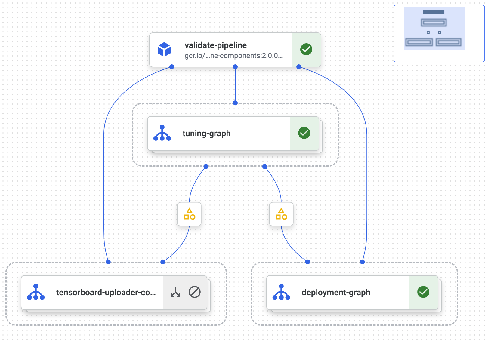
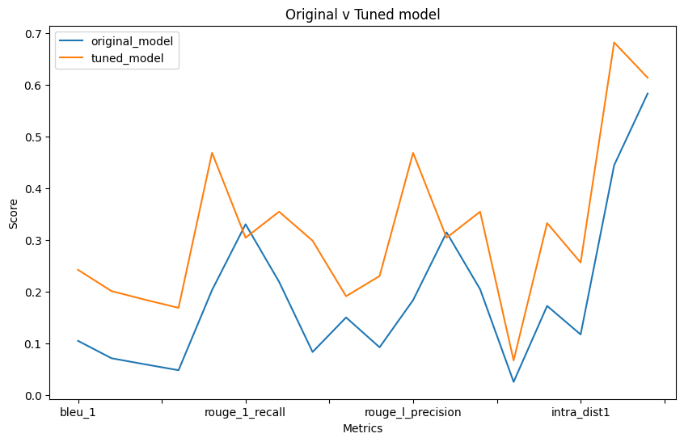

! pip3 install --upgrade google-cloud-aiplatform
! pip3 install shapely<2.0.0
# We will use the Hugging Face transformers library and datasets
! pip install transformers datasets
!pip install sequence-evaluate
!pip install rouge sentence-transformers11 Model tuning and evaluation

11.0.1 Considerations
Why fine-tune?
Prompt design can help guide an LLM to generating relevant responses. Tuning a model can help it learn to respond in a particular style, format, or to provide detailed answers concerning niche material.
11.0.2 Steps
- Consider the task
- Collect relevant and high-value examples of typical inputs and desired outputs. Try generating data if this step is difficult.
- Begin by tuning a small model (eg > 1B parameters).
- Evaluate whether the LLM has improved.
- Increase amounts of data, task complexity, model size.
11.0.3 Computational resources
Training a 1B-parameter model will fit on a 16GB GPU, such as an A100. Any model of 5B or more parameters will require 8 x A100s (640GB of memory), or 64 cores of V3 TPUs.
- Please note, since fine tuning is a computationally expensive operation and some users may have to request additional quota from GCP.

11.0.4 PEFT and LoRA
Parameter-efficient fine tuning refers to techniques for adapting models that minimize the number of parameters that are updated to improve outputs. PEFT approaches tend to focus on freezing pre-trained weights and updating a minimal set of task-specific parameters. A prevalent example is LoRA.
LoRA (low-rank adaptation) adds update matrices, which are pairs of rank-decomposition weight matrices to existing weights. The update matricies are the only weights trained, saving time and memory.
# Automatically restart kernel after installs so that your environment can access the new packages
import IPython
app = IPython.Application.instance()
app.kernel.do_shutdown(True){'status': 'ok', 'restart': True}If you’re on Colab, authenticate via the following cell
from google.colab import auth
auth.authenticate_user()Add your project id, project region and a Google Cloud Storage bucket URI.
PROJECT_ID = "<..>"
REGION = "<..>"
BUCKET_URI = "<..>"import vertexai
vertexai.init(project=PROJECT_ID, location=REGION)11.0.5 Data preparation
We will use the Hugging Face datasets library to import Lamini’s open_llms dataset, which comprises questions and answers about various large language models.
import datasets
finetuning_dataset_path = "lamini/open_llms"
finetuning_dataset = datasets.load_dataset(finetuning_dataset_path)
print(finetuning_dataset)The dataset is downloaded as a data dictionary. Here we convert it into a Pandas dataframe.
import pandas as pd
from datasets import DatasetDict
df = pd.DataFrame(columns=[])
for key in finetuning_dataset:
dataset_df = pd.DataFrame.from_dict(finetuning_dataset[key])
df = pd.concat([df, dataset_df])
df.reset_index(drop=True, inplace=True)For Vertex AI, the question and answer columns have to be named input_text and output_text.
df = df.rename(columns={
'question': 'input_text',
'answer': 'output_text'
})df.head()| input_text | output_text | input_ids | attention_mask | labels | |
|---|---|---|---|---|---|
| 0 | AlekseyKorshuk-chatml-pyg-v1: AlekseyKorshuk-c... | The None dataset was used for training. | [44163, 76, 5462, 44, 641, 73, 2788, 14, 23481... | [1, 1, 1, 1, 1, 1, 1, 1, 1, 1, 1, 1, 1, 1, 1, ... | [44163, 76, 5462, 44, 641, 73, 2788, 14, 23481... |
| 1 | EleutherAI-gpt-neox-20b: EleutherAI-gpt-neox-2... | GPT-NeoX-20B's architecture intentionally rese... | [30377, 16580, 18128, 14, 72, 431, 14, 570, 10... | [1, 1, 1, 1, 1, 1, 1, 1, 1, 1, 1, 1, 1, 1, 1, ... | [30377, 16580, 18128, 14, 72, 431, 14, 570, 10... |
| 2 | EleutherAI-gpt-neox-20b: EleutherAI-gpt-neox-2... | The advantage of using GPT-NeoX-20B is that it... | [30377, 16580, 18128, 14, 72, 431, 14, 570, 10... | [1, 1, 1, 1, 1, 1, 1, 1, 1, 1, 1, 1, 1, 1, 1, ... | [30377, 16580, 18128, 14, 72, 431, 14, 570, 10... |
| 3 | ausboss-llama-30b-supercot: What parameter siz... | This LoRA is compatible with any 7B, 13B or 30... | [666, 67, 1730, 14, 620, 2902, 14, 1229, 67, 1... | [1, 1, 1, 1, 1, 1, 1, 1, 1, 1, 1, 1, 1, 1, 1, ... | [666, 67, 1730, 14, 620, 2902, 14, 1229, 67, 1... |
| 4 | CalderaAI-30B-Lazarus: CalderaAI-30B-Lazarus: ... | Answer: | [4218, 491, 66, 18128, 14, 1229, 35, 14, 45, 2... | [1, 1, 1, 1, 1, 1, 1, 1, 1, 1, 1, 1, 1, 1, 1, ... | [4218, 491, 66, 18128, 14, 1229, 35, 14, 45, 2... |
from sklearn.model_selection import train_test_split
# split is set to 80/20
train, eval = train_test_split(df, test_size=0.2)
print(len(train))890See the docs for more details on data requirements.
GCP recommends 100-500 examples to tune a model, so we have ample to get started with almost 900.
eval.head()| input_text | output_text | input_ids | attention_mask | labels | |
|---|---|---|---|---|---|
| 331 | tiiuae-falcon-40b: What is the purpose of larg... | The purpose of large language models is to pro... | [85, 2886, 86, 3348, 14, 39226, 585, 14, 1449,... | [1, 1, 1, 1, 1, 1, 1, 1, 1, 1, 1, 1, 1, 1, 1, ... | [85, 2886, 86, 3348, 14, 39226, 585, 14, 1449,... |
| 271 | stable-vicuna-13b: What datasets are used to t... | These models are trained on various datasets, ... | [11351, 14, 19742, 9821, 14, 1012, 67, 27, 173... | [1, 1, 1, 1, 1, 1, 1, 1, 1, 1, 1, 1, 1, 1, 1, ... | [11351, 14, 19742, 9821, 14, 1012, 67, 27, 173... |
| 468 | EleutherAI-gpt-j-6b: EleutherAI-gpt-j-6b: Eleu... | To maximize the likelihood of predicting the n... | [30377, 16580, 18128, 14, 72, 431, 14, 75, 14,... | [1, 1, 1, 1, 1, 1, 1, 1, 1, 1, 1, 1, 1, 1, 1, ... | [30377, 16580, 18128, 14, 72, 431, 14, 75, 14,... |
| 488 | llama-30b: llama-30b: Who is eligible to acces... | Access to the model is granted on a case-by-ca... | [620, 2902, 14, 1229, 67, 27, 26198, 2902, 14,... | [1, 1, 1, 1, 1, 1, 1, 1, 1, 1, 1, 1, 1, 1, 1, ... | [620, 2902, 14, 1229, 67, 27, 26198, 2902, 14,... |
| 723 | CalderaAI-30B-Lazarus: CalderaAI-30B-Lazarus: ... | The desired outcome of using LoRAs on language... | [4218, 491, 66, 18128, 14, 1229, 35, 14, 45, 2... | [1, 1, 1, 1, 1, 1, 1, 1, 1, 1, 1, 1, 1, 1, 1, ... | [4218, 491, 66, 18128, 14, 1229, 35, 14, 45, 2... |
We now convert the training data to the required JSON Lines format, in which each line contains a single training example. We store the file in the GCS bucket.
tune_jsonl = train.to_json(orient="records", lines=True)
print(f"Length: {len(tune_jsonl)}")
print(tune_jsonl[0:100])Length: 668339
{"input_text":"llama-65b: When was LLaMA released?","output_text":"LLaMA was released on February 24training_data_filename = "tune_open_llms.jsonl"
with open(training_data_filename, "w") as f:
f.write(tune_jsonl)! gsutil cp $training_data_filename $BUCKET_URITRAINING_DATA_URI = f"{BUCKET_URI}/{training_data_filename}"MODEL_NAME = f"fine-tuned-open-llms"from vertexai.preview.language_models import TextGenerationModel
# Tuning job
def tuned_model(
project_id: str,
location: str,
training_data: str, # the GCS URI of the JSONL file
model_display_name: str, # name of the model
train_steps=100, # number of training steps when tuning the model
):
# References our base model, bison
model = TextGenerationModel.from_pretrained("text-bison@001")
model.tune_model(
training_data=training_data,
model_display_name=model_display_name,
train_steps=train_steps,
# Tuning can only happen in the "europe-west4" location
tuning_job_location="europe-west4",
# Model can only be deployed in the "us-central1" location
tuned_model_location="us-central1",
)
# Test the tuned model:
print(
model.predict(
"ausboss-llama-30b-supercot: What parameter sizes is this LoRA compatible with?"
)
)
return modelmodel = tuned_model(PROJECT_ID, REGION, TRAINING_DATA_URI, MODEL_NAME)11.0.6 View a list of tuned models
If you have already tuned or imported a model, or your Colab session had to be reconnected, you can use this function to load it.
from vertexai.preview.language_models import TextGenerationModel
def list_tuned_models(
project_id: str,
location: str,
) -> None:
"""List tuned models."""
vertexai.init(project=project_id, location=location)
model = TextGenerationModel.from_pretrained("text-bison@001")
tuned_model_names = model.list_tuned_model_names()
print(tuned_model_names)list_tuned_models(project_id=PROJECT_ID, location=REGION)11.0.7 Load the tuned model
parameters = {
"max_output_tokens": 1024,
"temperature": 0.1,
"top_p": 0.8,
"top_k": 40
}
original_model = TextGenerationModel.from_pretrained("text-bison@001")
# Add the ouptut from list_tuned_models above
tuned_model = original_model.get_tuned_model("<..>")
response = tuned_model.predict(
""""EleutherAI-gpt-neox-20b: What techniques were used to distribute the model across GPUs?"?""",
**parameters
)
print(f"Response from tuned model: {response.text}")Response from tuned model: The techniques used to distribute the model across GPUs were:
1. TPUs were used to distribute the model across GPUs.
2. The model was distributed across GPUs using TPUs.
3. The model was distributed across GPUs using TPUs.def gen_eval_answers(model_, eval_data):
eval_data = eval_data[:5] # you can change the number of rows you want to use
eval_q = eval_data["input_text"]
eval_answer = eval_data["output_text"]
# answers is a list of the model outputs
answers = []
for i in eval_q:
response = model_.predict(i)
answers.append(response.text)
# ground_truths is the original output_text from the dataset
ground_truths = eval_answer.tolist()
return answers, ground_truthsOccasionally a response by the model will trigger safety flags that lead to an empty output, so we need a function to ensure that any empty entries (” “) in answers are deleted, along with their counterpart entry in ground_truths.
def filter_empty(ans, truths):
filtered_answers = []
filtered_ground_truths = []
for i, (ans, gt) in enumerate(zip(ans, truths)):
if ans != "":
filtered_answers.append(ans)
filtered_ground_truths.append(gt)
if len(filtered_answers) != len(filtered_ground_truths):
raise ValueError("Filtered lists have unequal length")
return filtered_answers, filtered_ground_truths11.0.8 Evaluation
Evaluating language models is complicated, and a quickly-evolving field.
In this notebook, we will use sequence-evaluate, which allows us to check the following scores:
BLEU: a measure of similarity between the model outputs and human-written benchmark text (our
ground_truths).ROUGE: measures the overlap between model outputs and
ground_truths.
from seq_eval import SeqEval
def evaluate(model_, eval_data):
answers, ground_truths = gen_eval_answers(model_, eval)
filtered_answers, filtered_ground_truths = filter_empty(answers, ground_truths)
evaluator = SeqEval()
scores = evaluator.evaluate(filtered_answers, filtered_ground_truths, verbose=False)
return scoresoriginal_model_scores = evaluate(original_model, eval)tuned_model_scores = evaluate(tuned_model, eval)
print(tuned_model_scores){'bleu_1': 0.24233021044554298, 'bleu_2': 0.20119113021360832, 'bleu_3': 0.18451727800543202, 'bleu_4': 0.1687980254687695, 'rouge_1_precision': 0.46880952380952384, 'rouge_1_recall': 0.3044662309368192, 'rouge_1_f1': 0.3548340656552031, 'rouge_2_precision': 0.2986842105263158, 'rouge_2_recall': 0.19130564263322883, 'rouge_2_f1': 0.23037575647430647, 'rouge_l_precision': 0.46880952380952384, 'rouge_l_recall': 0.3044662309368192, 'rouge_l_f1': 0.3548340656552031, 'inter_dist1': 0.0670611426615179, 'inter_dist2': 0.33266931608228656, 'intra_dist1': 0.2564452052802795, 'intra_dist2': 0.6822323896137757, 'semantic_textual_similarity': 0.6141194343566895}11.0.9 Results
Now we can create a dataframe and visualize if our tuning has yielded any benefits over the original model.
# Create a DataFrame from each dictionary
df1 = pd.DataFrame([original_model_scores], index=['original_model'])
df2 = pd.DataFrame([tuned_model_scores], index=['tuned_model'])
# Concatenate the DataFrames vertically
result_df = pd.concat([df1, df2])
result_df.head()| bleu_1 | bleu_2 | bleu_3 | bleu_4 | rouge_1_precision | rouge_1_recall | rouge_1_f1 | rouge_2_precision | rouge_2_recall | rouge_2_f1 | rouge_l_precision | rouge_l_recall | rouge_l_f1 | inter_dist1 | inter_dist2 | intra_dist1 | intra_dist2 | semantic_textual_similarity | |
|---|---|---|---|---|---|---|---|---|---|---|---|---|---|---|---|---|---|---|
| original_model | 0.104945 | 0.071229 | 0.059507 | 0.048115 | 0.203196 | 0.330501 | 0.219252 | 0.083341 | 0.150202 | 0.092441 | 0.183713 | 0.314760 | 0.204785 | 0.025554 | 0.172547 | 0.117250 | 0.444751 | 0.583566 |
| tuned_model | 0.242330 | 0.201191 | 0.184517 | 0.168798 | 0.468810 | 0.304466 | 0.354834 | 0.298684 | 0.191306 | 0.230376 | 0.468810 | 0.304466 | 0.354834 | 0.067061 | 0.332669 | 0.256445 | 0.682232 | 0.614119 |
A visualization will make our evaluation easier. Higher scores are of course better in this case.
import matplotlib.pyplot as plt
result_df.transpose().plot(kind='line', figsize=(10, 6))
plt.title('Original v Tuned model')
plt.xlabel('Metrics')
plt.ylabel('Score')
plt.legend(['original_model', 'tuned_model'])
plt.show()